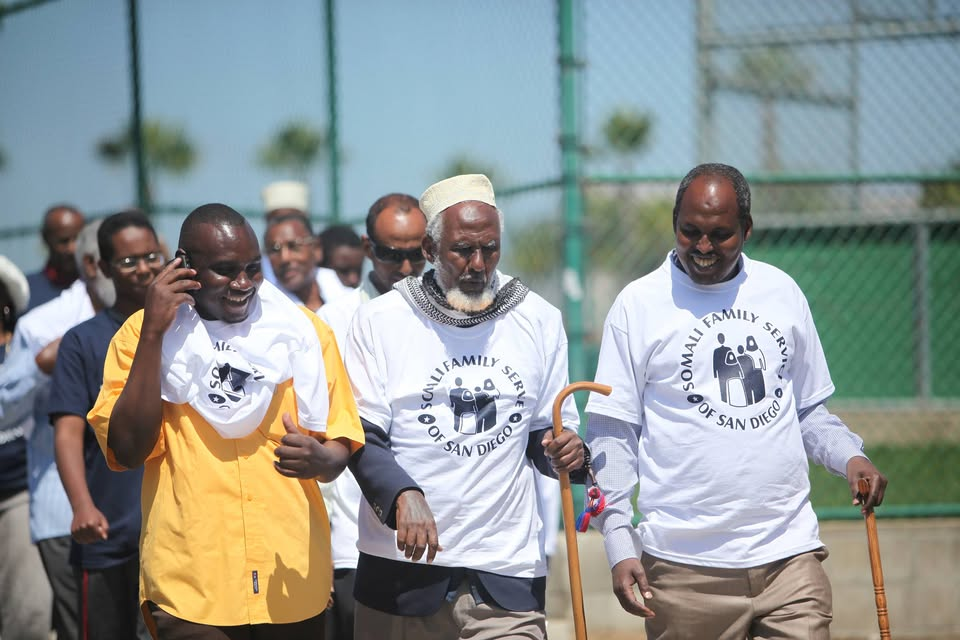
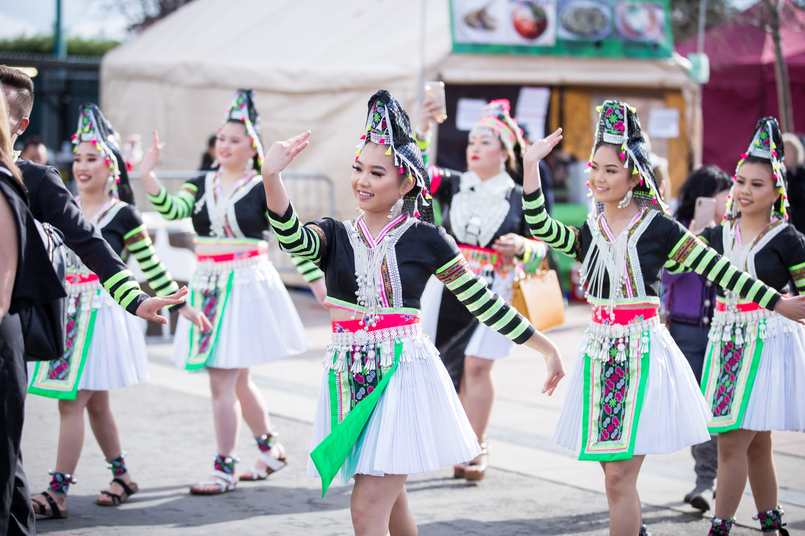
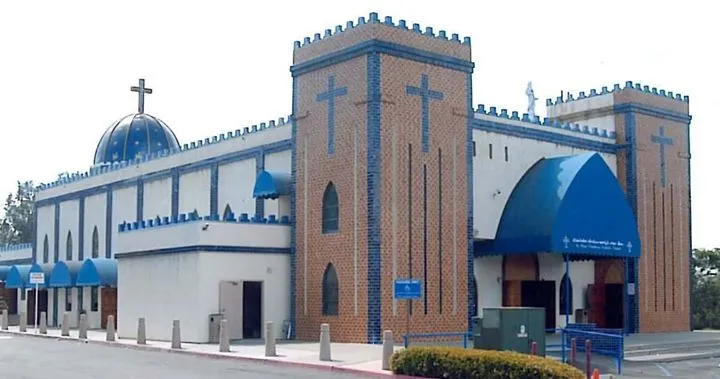
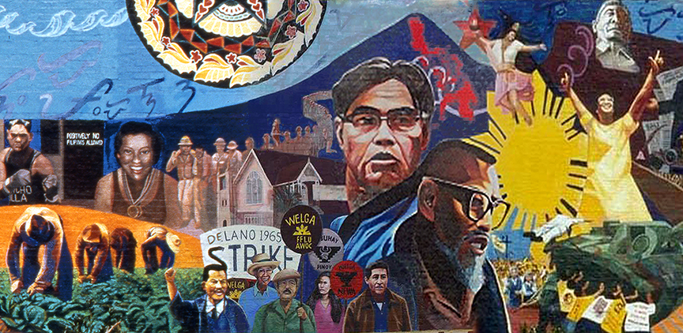
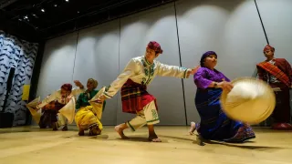

Ethnic Studies | Lesson 09 | Local Community Studies
San Diego's Hidden Communities
Essential Question
Who are your neighbors, where did they come from, and what did America have to do with why they are here?
On a Saturday morning in City Heights, University Avenue can feel like a map you can walk through. A family steps out of a Somali market with bags of rice and tea. A few doors away, someone orders Vietnamese pho, while another family stops for pan dulce or tacos before heading home. The signs, languages, foods, churches, mosques, and stores all tell stories. This lesson asks why those stories are here, in San Diego, and how American decisions in other parts of the world helped shape the neighborhoods students pass every day.
On a Saturday morning in City Heights, University Avenue can feel like a map you can walk through. A family leaves a Somali market with rice and tea. Nearby, people buy Vietnamese food, pan dulce, or tacos. The signs, languages, foods, churches, mosques, and stores all tell stories. This lesson asks why those stories are here in San Diego.
San Diego neighborhoods connected to this lesson: City Heights, Linda Vista, El Cajon, National City, and Chula Vista. Wikimedia Commons or teacher-created map.PHASE ONE
HOW THEY GOT HERE
THE SOUTH BAY: NAVY ROUTES AND FILIPINO FAMILY ROOTS
Filipino | National City and Chula Vista
Filipino American roots in San Diego were shaped by 1898: U.S. rule in the Philippines, Navy recruitment, and migration across the Pacific.
Filipino American Navy families and sailors, early twentieth century. Navy service helped connect Filipino families to San Diego and the South Bay. Wikimedia Commons or Library of Congress.
Many Filipino American families in the South Bay can trace their local history to the Navy. After the United States took control of the Philippines in 1898, Filipinos became American nationalsPeople under a country's power, but not full citizens., which meant they were tied to the United States without receiving full citizenship. The U.S. Navy began recruiting Filipino men in 1901, often limiting them to service jobs such as stewards and mess attendants. San Diego's naval bases made the region a place where Filipino sailors, workers, and families built roots over generations. That is why Filipino American history in National City and Chula Vista is not only an immigration story. It is also a story of empire, labor, military service, and family life.
Many Filipino American families in the South Bay connect to the Navy. After 1898, the United States controlled the Philippines. Filipinos were tied to the United States, but they were not full citizens. The Navy recruited Filipino men starting in 1901, often for service jobs. San Diego's naval bases helped Filipino families settle in National City and Chula Vista.
CITY HEIGHTS: UNIVERSITY AVENUE AND SOMALI RESETTLEMENT
Somali | City Heights
Somali American life in San Diego was shaped by 1991 and 1993: civil war, U.S. military intervention, refugee resettlement, and rebuilding in City Heights.
University Avenue in City Heights, where Somali-owned businesses have helped anchor community life since the 1990s. CC license or local community photography.
City Heights became a home for Somali families after Somalia's government collapsed in 1991 and war displaced millions of people. The United States intervened militarily in Somalia in 1993, then withdrew while the conflict continued. Somali refugeesPeople forced to leave their country because returning home is unsafe. were later resettled in American cities, including San Diego. In City Heights, families built markets, restaurants, tea houses, mosques, youth programs, and social service organizations. The neighborhood became more than a place of arrival. It became a place where East African families could find food, language, help, and community.
Somali families came to San Diego after war made Somalia unsafe. Somalia's government collapsed in 1991. The United States sent troops in 1993, then left while the conflict continued. Somali refugees were later resettled in American cities, including San Diego. In City Heights, families built markets, restaurants, mosques, tea houses, and support groups.
LINDA VISTA: APARTMENTS, REFUGEES, AND HMONG MEMORY
Hmong | Linda Vista
Hmong American life in San Diego was shaped by 1961 to 1975: the Secret War in Laos, refugee camps, and resettlement in neighborhoods like Linda Vista.
Linda Vista, San Diego. The neighborhood received many Southeast Asian refugee families in the late 1970s and 1980s. Wikimedia Commons or city planning source.
The Hmong story in San Diego begins in the mountains of Laos, far from Linda Vista. During the Cold War, the CIA recruited many Hmong people to fight a secret proxy warA war where a powerful country supports local fighters instead of fighting openly. against communist forces. When the United States withdrew from Southeast Asia in 1975, many Hmong families were targeted as enemies and fled to refugee camps in Thailand. Some later came to San Diego and rebuilt their lives near other Southeast Asian refugee communities. Linda Vista became one of the places where children grew up between two worlds: American schools and Hmong family memory.
The Hmong story in San Diego begins in Laos. During the Cold War, the CIA recruited many Hmong people to fight a secret war. When the United States left Southeast Asia in 1975, many Hmong families were targeted. They fled to refugee camps in Thailand. Some later came to San Diego and rebuilt their lives in places like Linda Vista.
EL CAJON: MAIN STREET AND LITTLE BAGHDAD
Chaldean | El Cajon
Chaldean American life in El Cajon was shaped by 2003: the U.S. invasion of Iraq, rising sectarian violence, and the search for safety.
Main Street in El Cajon. The city became known locally as Little Baghdad because of its large Iraqi Chaldean community. CC license or local community photography.
ChaldeansAn ancient Christian community from Iraq with roots in Mesopotamia. are an ancient Christian people from Iraq. Many speak Neo-Aramaic, a language connected to Aramaic, the language spoken in the time of Jesus. After the United States invaded Iraq in 2003, central authority weakened and violence against religious minorities increased. Churches were attacked, leaders were kidnapped, and many families no longer felt safe. El Cajon received many Chaldean refugees and immigrants. Over time, churches, bakeries, markets, restaurants, and family businesses made the city feel like a new center of Chaldean life.
Chaldeans are an ancient Christian people from Iraq. Many speak Neo-Aramaic, a language connected to Aramaic. After the United States invaded Iraq in 2003, violence against religious minorities increased. Many Chaldean families no longer felt safe. El Cajon became a major home for Chaldean churches, markets, restaurants, and family businesses.
DID YOU KNOW
50th Street and University Avenue in City Heights, a community hub connected to Somali-owned businesses and pedestrian safety organizing.
One corner in City Heights can tell a whole city story. Around 50th Street and University Avenue, Somali-owned businesses helped turn an ordinary intersection into a community hub. When safety became a concern, residents did not just complain: they organized for a street that worked better for the people who actually lived and walked there.
PHASE TWO
WHAT THEY BUILT
The communities in this lesson did not arrive as blank pages. They brought languages, recipes, prayers, business skills, family networks, memories, and ways of helping each other survive. In San Diego, those gifts became local institutions. A store became a place to hear your language. A church or mosque became a place to grieve and celebrate. A cultural festival became a way for children to learn that their family history belonged in public.
The communities in this lesson did not arrive with nothing. They brought languages, food, faith, skills, family ties, and memories. In San Diego, they used those things to build local institutions. A store could become a place to hear your language. A church, mosque, or festival could help children feel proud of their family history.
Filipino American community institution in the South Bay. Wikimedia Commons or local public source.
SOUTH BAY FAMILY NETWORKS
Filipino American families built churches, civic groups, veterans networks, and political leadership in National City and Chula Vista.

Somali and East African community organizations help refugee families navigate life in San Diego. Local community source.
CITY HEIGHTS SUPPORT SYSTEMS
Somali and East African organizations built services for translation, youth support, health, housing, and refugee family needs.

Hmong cultural celebrations in San Diego help younger generations learn language, clothing, music, and memory. CC license.
HMONG MEMORY IN PUBLIC
Hmong families preserved culture through language programs, celebrations, clothing, food, music, and story cloth traditions.

St. Peter Chaldean Catholic Cathedral in El Cajon, a major religious institution for the local Chaldean community. Wikimedia Commons or local public source.
EL CAJON AS A NEW CENTER
Chaldean families built churches, bakeries, markets, restaurants, and business networks that made El Cajon a new community center.
FAST FACTS
HOW GLOBAL DECISIONS BECAME LOCAL SAN DIEGO STORIES
1898the year U.S. rule in the Philippines began, helping create the Navy pathway that tied many Filipino families to San Diego
1990sthe decade when Somali refugee resettlement helped make City Heights a major East African community hub
1975the year U.S. withdrawal from Southeast Asia left many Hmong allies in danger and pushed families toward refugee camps
2003the year the U.S. invasion of Iraq helped trigger new violence and displacement for Chaldean Christian families
PHASE THREE
WHO THEY ARE NOW
Community members in City Heights, San Diego. The neighborhood's diversity is part of daily life, not just a statistic. CC license.
Today, the children and grandchildren of these communities are San Diegans in the fullest sense. They go to local schools, play on local teams, work in hospitals, restaurants, stores, offices, military bases, and family businesses. Some speak only English. Some move between English and a family language at home. Some feel proud of their history, while others feel tired of being asked where they are "really" from. Their lives show that San Diego is not separate from world history. It is one of the places where world history became local.
Today, the children and grandchildren of these communities are San Diegans. They go to local schools and work in local jobs. Some speak only English. Some speak English and another family language. Some feel proud of their history, while others are tired of being asked where they are "really" from. Their lives show that world history became local in San Diego.
Understanding these communities means looking beyond simple labels like immigrant, refugee, or minority. Filipino American roots in the South Bay connect to U.S. empire and Navy labor. Somali life in City Heights connects to civil war, refugee resettlement, and neighborhood organizing. Hmong life in Linda Vista connects to a secret war and the work of preserving memory. Chaldean life in El Cajon connects to the Iraq War and the rebuilding of an ancient Christian community. Each story is different, but all of them ask students to see their own city with sharper eyes.
These communities cannot be explained with simple labels. Filipino American roots in the South Bay connect to U.S. empire and Navy labor. Somali life in City Heights connects to war, resettlement, and organizing. Hmong life in Linda Vista connects to a secret war and cultural memory. Chaldean life in El Cajon connects to Iraq and the rebuilding of an ancient Christian community. Each story is different, but each helps students see San Diego more clearly.
ART SPOTLIGHT

Gintong Kasaysayan, Gintong Pamana: Filipino Americans: A Glorious History, A Golden Legacy | Eliseo Art Silva, 1995
This large public mural in Historic Filipinotown, Los Angeles, shows Filipino and Filipino American history across centuries, including migration, resistance, labor, and community memory.
Eliseo Art Silva painted the mural when he was only twenty-two years old. The mural is not in San Diego, but it helps explain why Filipino American communities across California fight to be seen in public history. A wall can do what a textbook often fails to do: put workers, migrants, artists, and elders in the center of the story.
PRIMARY SOURCE MOMENT
Philip Vera Cruz, Filipino American labor organizer and United Farm Workers leader. Wikimedia Commons or National Park Service.
"My life within the union, my life now outside the union, are all one: my continual struggle to improve my life and the lives of my fellow workers. But our struggle never stops."
Philip Vera Cruz, quoted in labor history accounts of his life and work, 1990s
WHY THIS MATTERS: Vera Cruz connects personal life to community struggle. He does not describe labor organizing as one event that ended. He describes it as a continuing responsibility. His words help students see that local communities are not only shaped by U.S. decisions. They also respond, organize, and build power.
THEN AND NOW
SAN DIEGO IS A LIVING MAP: THE NEIGHBORHOODS STUDENTS PASS EVERY DAY CARRY WORLD HISTORY IN LOCAL FORM.
EARLY 1900S
Filipino men serving in the U.S. Navy, early twentieth century. Navy recruitment helped connect Filipino families to San Diego and the South Bay. Wikimedia Commons or Library of Congress.
NOW

Filipino American community life in San Diego's South Bay today. The community's local roots connect to more than a century of U.S. rule, labor, military service, and migration. CC license.
THEN
In the early twentieth century, Filipino men served in the U.S. Navy while the Philippines was under American rule. Many worked in restricted service jobs. San Diego's naval presence helped turn a global imperial relationship into a local family history.
NOW
Today, Filipino American communities in National City, Chula Vista, and the South Bay are multigenerational. Families have built churches, businesses, civic organizations, festivals, and political leadership. Their story shows how an overseas decision became part of everyday San Diego life.
CONNECTION
The same pattern appears across this lesson: American decision, movement across borders, resettlement, and community building. Somali, Hmong, Chaldean, and Filipino American communities did not appear in San Diego by accident. Their neighborhoods help students read San Diego as a living record of U.S. actions in the world.
Which community story most changes the way you see San Diego, and why?